For the past half-century, designers have been entranced with the idea of the perfect transit map. Massimo Vignelli has perhaps designed the most celebrated—and controversial—map for the New York City subway in 1972 (CITATION). With elegant curves, stacked lines, and a vibrant display of color, his map is undoubtedly considered a graphic design masterpiece, although he is criticized for sacrificing geographic accuracy for a cohesive aesthetic (CITATION).
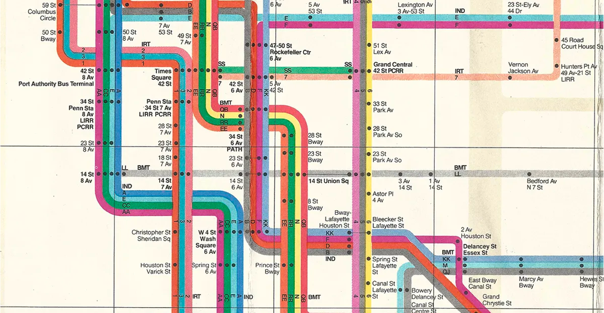No map is perfect, and Vignelli’s is no exception. However, its impact can be plainly traced to maps that are used to this day. Take a look at the examples below.
1972 New York City Subway Map by Massimo Vignelli. This map is famous for its use of stacked lines and its bold choice to eschew the constraints of the above-ground landscape, favoring visual aesthetics over precise geography.
1972 New York City Subway Map by Massimo Vignelli. This map is famous for its use of stacked lines and its bold choice to eschew the constraints of the above-ground landscape, favoring visual aesthetics over precise geography.
1972 New York City Subway Map by Massimo Vignelli. This map is famous for its use of stacked lines and its bold choice to eschew the constraints of the above-ground landscape, favoring visual aesthetics over precise geography.
By nature, bus maps pose unique complications. Unlike train maps, they are more innately tied to the geographic landscape of a city. Whereas an unseen underground train track doesn’t need to follow a street, designers can take certain liberties in how they portray them.
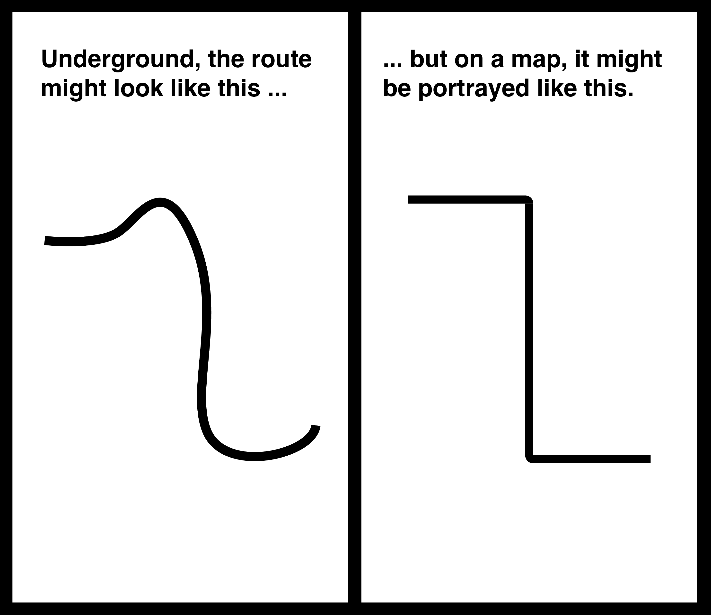Bus maps aren’t afforded the same luxury, mainly because buses, by nature, always follow streets.
Consider the bus map for downtown Minneapolis
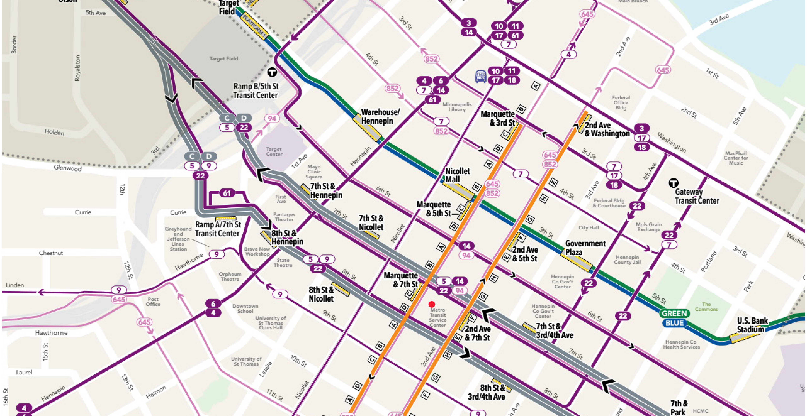Because of the amount of complex information it has to show, utilizing visual design to communicate clearly is essential. However, I have long held a perception that potential bus users in Minneapolis—like in many cities—don’t have a strong working knowledge of where the bus can take them.
This project theorizes that user feedback about the current bus map’s shortcomings and principles gleaned from the most celebrated train maps can be integrated to reimagine downtown Minneapolis’s bus map and, in the process, help residents better understand this underutilized form of transit. While apps are a widely used transit navigation tool, there’s something to be said for a static map that offers bird’s eye view of the larger system. This project aims to offer that to a new audience of users.
In other MAGWD courses, I have used self-directed projects to tackle transit from multiple angles, mainly with a focus on branding. Creating a map was the last and, perhaps, most challenging endeavor to round out my experimentation with transit projects.
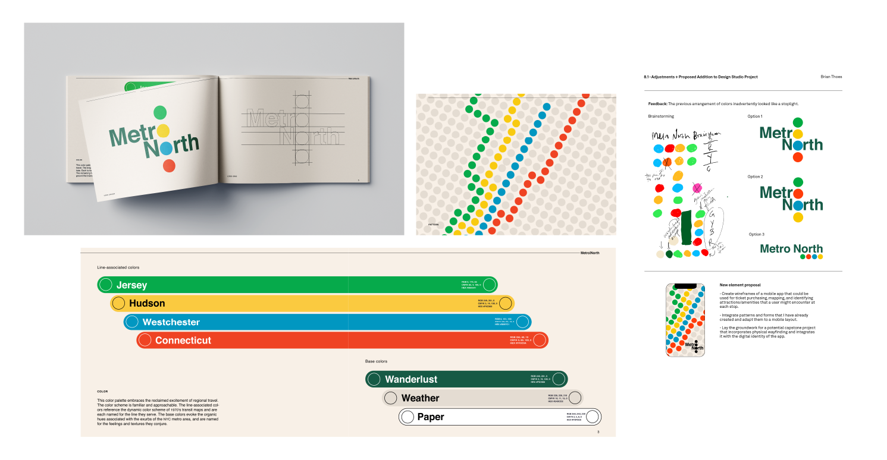But before tackling the map, it only made sense to talk to someone who could give some insights into the overall project. I spoke with Catherine Bretheim, an MAGWD alum (’20) and a designer with Minneapolis agency Colle McVoy. In another life, Catherine also lived and worked in Copenhagen, designing brand identities and visual materials for municipal transportation projects, and earned a degree in geography from Macalester College.
Catherine had three major insights:
I needed to design and conduct a survey to test my assumption that there are currently barriers to understanding the Minneapolis bus map.
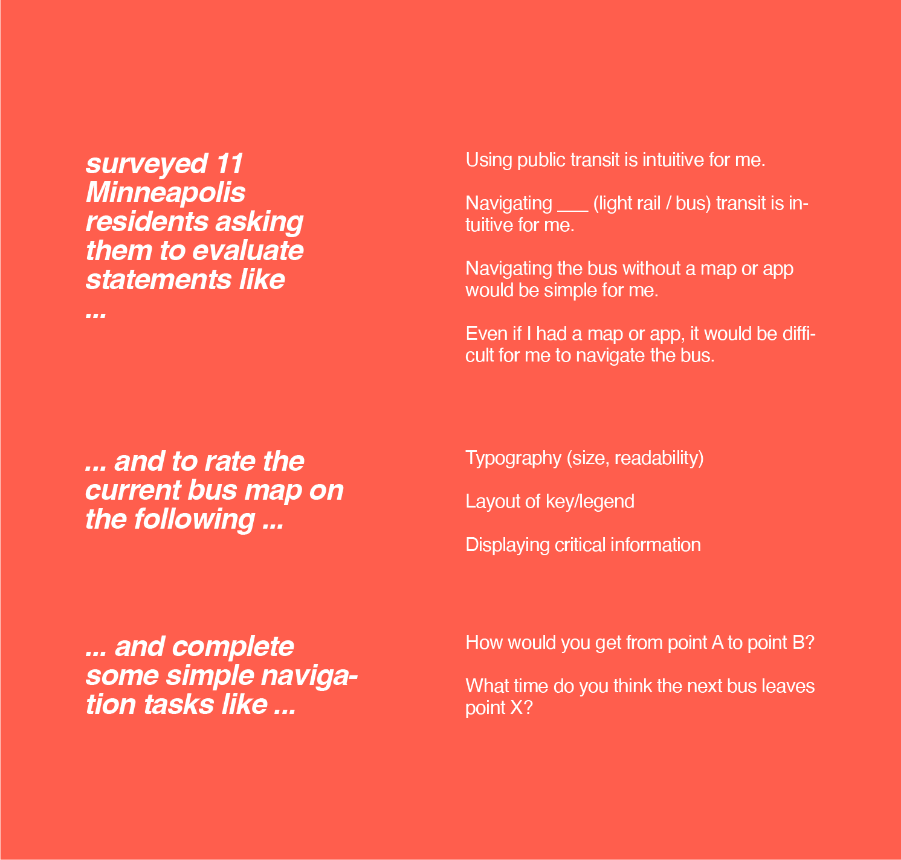Feedback pointed out five major paint points with the current map that came to guide my reimagined map.
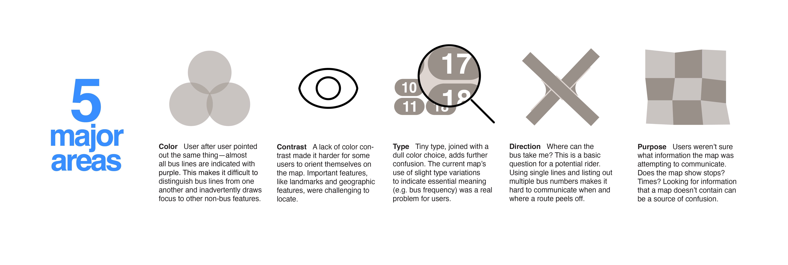I needed to design and conduct a survey to test my assumption that there are currently barriers to understanding the Minneapolis bus map.
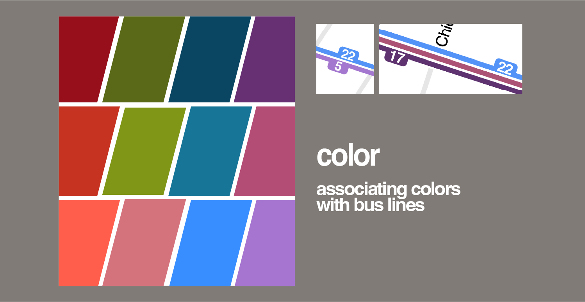Feedback pointed out five major paint points with the current map that came to guide my reimagined map.
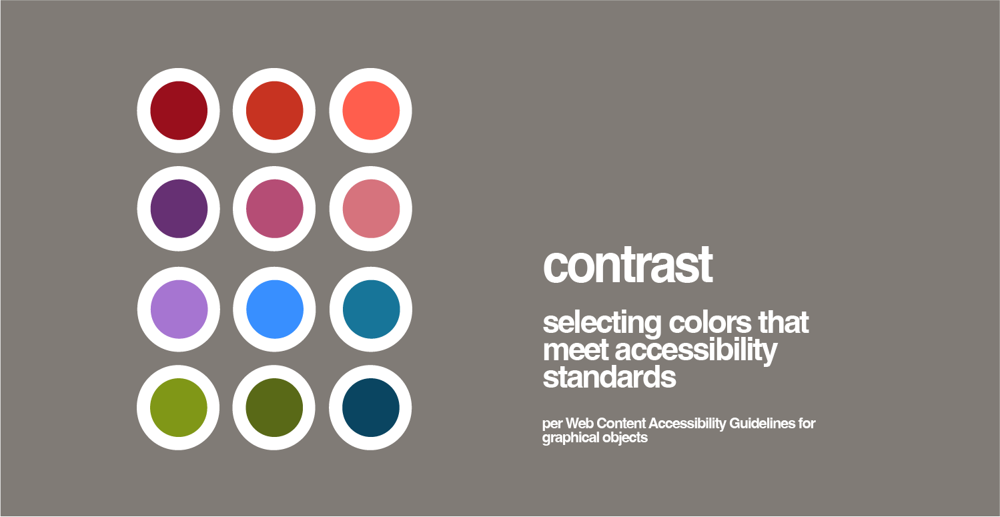I needed to design and conduct a survey to test my assumption that there are currently barriers to understanding the Minneapolis bus map.
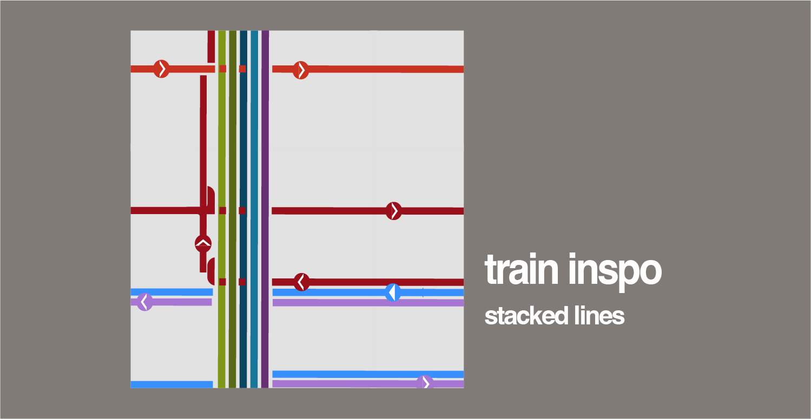I needed to design and conduct a survey to test my assumption that there are currently barriers to understanding the Minneapolis bus map.
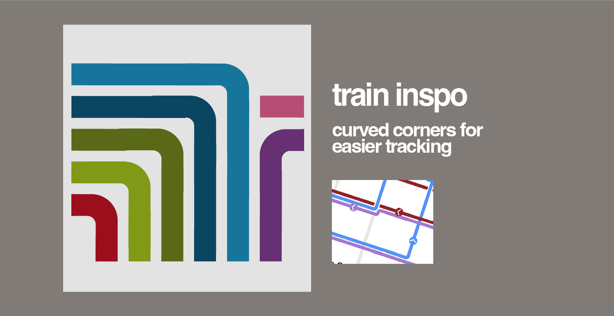I needed to design and conduct a survey to test my assumption that there are currently barriers to understanding the Minneapolis bus map.
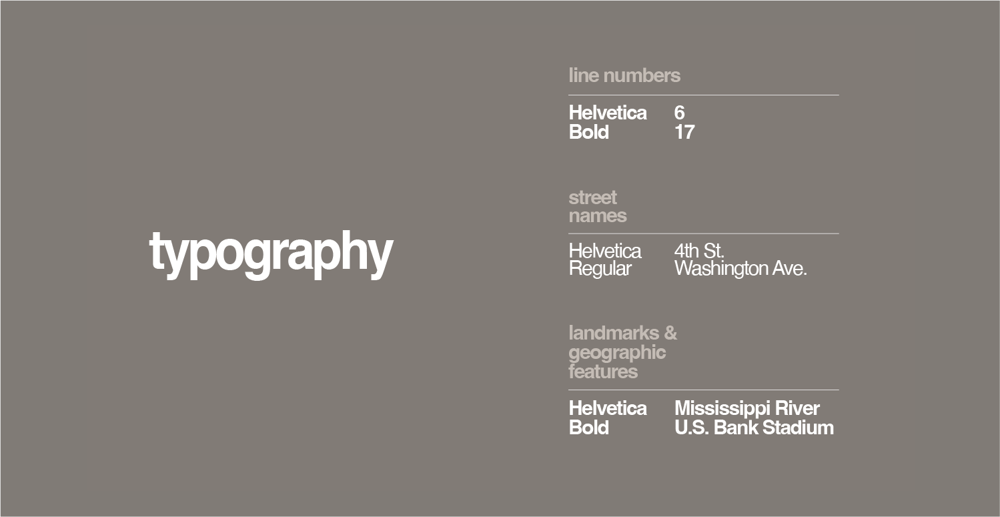